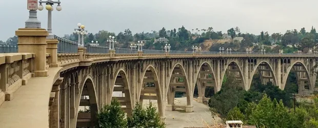

CBS Los Angeles
March 15, 2017 · News report
Pasadena Looks To Deter Jumps From Notorious 'Suicide Bridge' With Development Underway
Residents discuss protection before emergency fencing.
INDEPENDENT PROJECT GUIDE
Pasadena’s work since 2017 on a permanent suicide prevention barrier, documented through City reports, meetings, and recordings.

Browse reporting, interviews, organizational letters, and personal perspectives about the bridge.
Earlier history and prevention efforts ↓
Links open the original publisher sites. Some require a subscription.
CBS Los Angeles
March 15, 2017 · News report
Residents discuss protection before emergency fencing.
Los Angeles Times
July 19, 2017 · Steve Lopez column
Connects the 2017 emergency fencing with longer-term prevention proposals and an interview with Didi Hirsch’s Kita Curry.
Los Angeles magazine
June 18, 2018 · Interview and reporting
Interviews on the tension between prevention measures and historic preservation during the early task-force period.
Pasadena Now
September 4, 2018 · News report
Reports the emergency decision to extend temporary fencing along the bridge in September 2018.
Pasadena Now
October 30, 2019 · Meeting report
Reports residents’ and officials’ responses to the October 2019 concepts, including mesh transparency, alcoves, and the balance between protection and appearance.
Preferences expressed at the meeting were informal. They are separate from the City’s later public survey.
Pasadena Star-News
November 26, 2019 · News report
Reports preservation commissioners’ mixed reactions to the early designs and requests for full-scale mockups, alongside differing views about netting.
The article’s suggestion that netting had never been considered conflicts with the City’s earlier alternatives review. Golden Gate net construction was still underway in 2019.
Pasadena Now
April 20, 2020 · Budget reporting
Reports the pandemic-era budget proposal to omit a planned new $2 million appropriation for the Bridge. The paper’s Source 47 links the adopted budget outcome.
Pasadena Now
September 22, 2020 · Council report
Covers the Council’s approval of a mockup contract capped at $160,210 and the installation and review schedule anticipated at the time.
The November installation date was a forecast. The mockups were installed in March 2021.
Pasadena Now
March 4, 2021 · News report
Describes the launch of public viewing and the survey for the three full-scale mockups, including the different vantage points available to visitors.
The survey invitation is historical. The results and their separate response groups are discussed in the paper’s 2021 section.
Pasadena Now
March 26, 2021 · Meeting report
Reports the designers’ reasons for favoring mesh and their concerns about the height, light-standard changes, and visual effects of straight pickets.
Covers the March 25 open house. Statements about climb resistance and service life are claims made during the presentation.
Pasadena Now
April 1, 2021 · Brad Hanson opinion
Pasadena Beautiful’s president argues for reconsidering horizontal netting and describes the board’s objections to the vertical mockups.
The engineering and effectiveness claims are the writer’s arguments. The article’s 2016 date for the temporary ten-foot barrier is incorrect.
Pasadena Now
May 11, 2021 · Reporting on an organizational letter
Reports Pasadena Heritage’s reasons for finding none of the three mockups acceptable as presented and its request for more compatible options.
West Pasadena Residents’ Association
June 8, 2021 · Organizational letter
WPRA asks the City to delay implementing the proposed vertical barriers while alternatives receive further study, including technology and lower barriers.
The signed letter is dated June 8, 2021. The webpage was posted June 19. It records the association’s position before the August committee review.
Pasadena Now
August 18, 2021 · Kathleen Clary Miller letter
A former resident recalls the bridge’s place in her life, supports a permanent barrier, and hopes the design will preserve its character.
Pasadena Now
August 19, 2021 · Committee report
Reports the committee’s decision to seek further work, along with members’ differing views on enclosure, staffing, design choices, and timing.
The article’s survey-ranking description and spending typography contain errors. The City report and the paper’s 2021 table provide the figures used in this guide.
Pasadena Now
September 1, 2022 · News report
Reports contemporary frustration with the project’s pace, including comments from Sue Mossman and a resident, four years after the emergency fence.
Pasadena Now
September 22, 2022 · Committee report
Covers the design reset, the projected 2023 review sequence, construction-funding uncertainty, and Madison’s call to hold to the proposed timetable.
The article misdates the Council’s vertical-barrier decision and describes the City’s death figures as attempts. The guide uses the official records for those points.
Pasadena Now
February 10, 2023 · News report
Reports removal of the earlier mockups, a second consultant solicitation, and plans for the February community meeting.
The body describes removal of the middle mockup as expected on February 10, rather than confirming that all removal was already complete.
LAist
September 1, 2023 · News report
Explains the four concepts shown in August 2023, with design illustrations, the public-feedback invitation, and the City’s anticipated next steps.
This covers the August concepts, before the three-design set presented in November. Survey deadlines and approval forecasts are historical.
Pasadena Now
January 10, 2024 · Commission report
Reports the lack of consensus and differing views of Julianna Delgado, Robert Carpenter, Srinivas Rao, and Marie-Claude Fares about the three concepts.
Covers the January 9 advisory review. The City’s historical report says the light poles were repaired and reused in 1993, while their four-arm, four-globe portions were reconstructed. The funding figure describes the allocation reported at that time.
Pasadena Now
July 15, 2024 · Meeting preview
Previews the July 2024 review of barrier concepts, commission feedback, surveys, and other prevention measures.
Pasadena Now
July 18, 2024 · Committee report
Reports Bonnie Tang’s testimony about her son Nicholas and summarizes the committee’s discussion of barriers, netting, patrols, technology, and funding.
The official minutes support the paper’s account of the testimony. The meeting produced no final permanent-design recommendation.
Pasadena Now
July 16, 2025 · News report and City response
Reports the San Rafael Neighborhoods Association’s call for a decision and Brent Maue’s response about internal mockup testing and anticipated summer and fall reviews.
The proposed review sequence was a forecast. The historical background incorrectly dates the Labor Day emergency to 2017 rather than 2018.
West Pasadena Residents’ Association
2026 Winter · Sue Mossman commentary
Sue Mossman places the lengthy barrier process alongside other unresolved Pasadena preservation projects.
Winter 2026 newsletter, page 8. This is a preservation perspective, not a City decision.
Los Angeles Times
September 3, 1989 · Historical reporting
Background on the bridge’s rehabilitation and the preservation choices that preceded the current barrier project.
Los Angeles Times
November 26, 1992 · Historical reporting
A retrospective account of a child’s survival in 1937 and the public response that followed.
Glendale News-Press / Los Angeles Times
June 21, 2013 · News report
Explains the earlier decision to install crisis signs and the discussion of their limits.
PBS SoCal
November 22, 2013 · Historical background
Nathan Masters explains the earlier Scoville crossing, construction of the Colorado Street Bridge, its curved alignment, and the 1913 opening, with archival photographs and captions.
The article gives engineer Waddell’s first name as Joseph. The Library of Congress catalog identifies him as John Alexander Low Waddell.